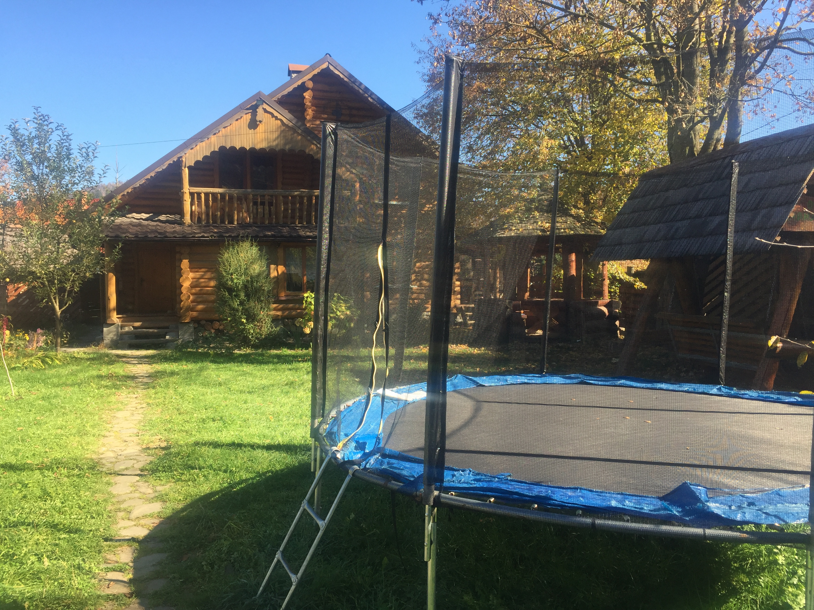
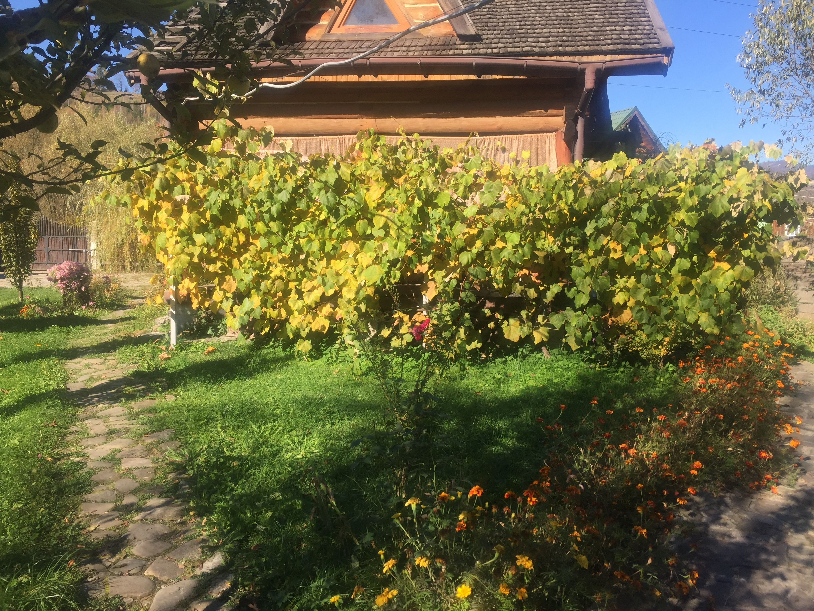

{{'The manor was erected in the picturesque mountain ridge of the Carpathians on the outskirts of the village of Tukhlya, belonging to the Skole Beskids national park. mountain ranges of the picturesque Carpathians: Zaleminsky and Golovetsky.'|translate}}
 {{'The two-story structure of the estate was created so as to integrate the geometry of power with the principles of tranquility. So on the first floor are: kitchen, large open veranda, dining room, fireplace room, library, lounge, bathroom and one of the five bedrooms. On the second floor there are two two-tier bedrooms with four beds, one four-bed, one double, and one bathroom.'|translate}}
{{'The house is equipped with modern amenities: hot water, gas, fireplace, independent heating. In the bath - a separate structure - there is a sauna, shower, cold water tub, a relaxation room.'|translate}}